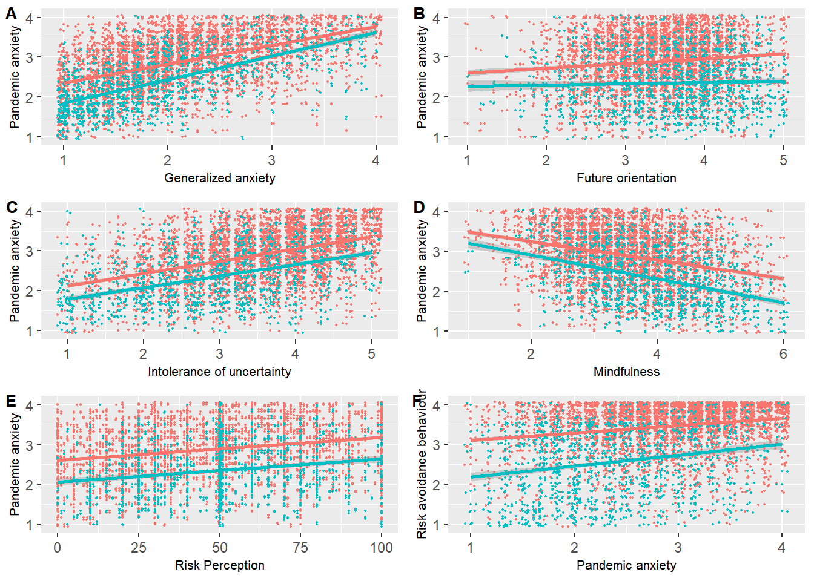

4 Open Peer Review
4.1 part 1
This exercise is about identifying reproducibility issues in a scientific publication. I used the criteria for reproduciblity that are publically available via here
I used to following article to grade for reproducibility:
Protective Behavior in Course of the COVID-19 Outbreak—Survey Results From Germany
| Transparency Criteria | Definition | Response Type |
|---|---|---|
| Study Purpose | A concise statement in the introduction of the article, often in the last paragraph, that establishes the reason the research was conducted. Also called the study objective. | yes |
| Data Availability Statement | A statement, in an individual section offset from the main body of text, that explains how or if one can access a study’s data. The title of the section may vary, but it must explicitly mention data; it is therefore distinct from a supplementary materials section. | yes |
| Data Location | Where the article’s data can be accessed, either raw or processed. | All in paper or supplementary files |
| Study Location | Author has stated in the methods section where the study took place or the data’s country/region of origin. | Yes; Germany |
| Author Review | The professionalism of the contact information that the author has provided in the manuscript. | Tier 2 |
| Ethics Statement | A statement within the manuscript indicating any ethical concerns, including the presence of sensitive data. | Yes |
| Funding Statement | A statement within the manuscript indicating whether or not the authors received funding for their research. | No |
| Code Availability | Authors have shared access to the most updated code that they used in their study, including code used for analysis. | Yes |
4.1.1 extra information about the study
goal of the study:
Disease-related literacy and factors such as age, gender, or education play a major role in shaping individual practices of protective behavior. This paper investigates different types and frequency of practicing protective behaviors, as well as socio-demographic factors that are associated with such behavioral change
Method:
Data stem from a cross-sectional survey in Germany. Three thousand seven hundred and sixty-five people were contacted, 3,186 participated in the survey. Information on behavior to lower the risk of becoming infected with COVID-19 was assessed by nine items (answer options yes/no). For each item, logistic regression models were used to estimate odds ratios (OR), using education, sex, and age as main predictors and adjusting for partnership status and household composition.
results:
People with lower educational level were less likely to avoid gatherings (OR = 0.63; 95%CI = 0.48–0.83), adapt their work situation (OR = 0.66; 95%CI = 0.52–0.82), reduce personal contacts and meetings (OR = 0.71; 95%CI = 0.55–0.93), or increase hand hygiene (OR = 0.53; 95%CI = 0.38–0.73). Being female was associated with higher odds of protective behavior for most outcomes. Exceptions were wearing face masks and adapting the own work situation. Associations between respondents’ age and individual behavior change were inconsistent and mostly weak
4.2 Part 2
In this part of the exercise I am going to reproduce at least 1 figure from a article using a data set and R-code shared in the project environment.
The first step is to look at the article and code.
This research was done in both Turkey and UK. The generalized and pandemic-related anxiety levels, future-oriented consideration, mindfulness, intolerance of uncertainty, risk perception and risk avoidance behaviors of the people who participated in the study were measured. These were then processed in Excel
This code loads both data from the UK and Turkey and merges them together so that there is one large excel document containing all relevant data. The merged data is loaded and ggplots are made of the various factors mentioned above. In each ggplot, the correlation of the pandemic-related anxiety levels with one of the factors (generalized anxiety, future-oriented consideration, mindfulness, intolerance of uncertainty, risk perception and risk avoidance behaviors) is visualized. The obtained ggplots are merged into one large figure.
After reading the code I would grade it a 4 on a scale from 1 to 5 for readability. I gave it a four because the code is pretty easily to read, However the names of the variables are sometimes confusing. This makes it difficult to distinguish what each plot visualizes
After downloading the data and the code I tried running the code. This gave the following error message:
Error in relevel.default(data$edu, “below_ug”) : ‘relevel’ only for (unordered) factors
To fix this error is change the code from data$edu= relevel(data$edu, “below_ug”) to data$edu= relevel(factor(data$edu), “below_ug”), This is also seen in the code chunk with an comment
## R CODE for Salali, Uysal, Bevan 2021 EMPH anxiety during a pandemic
# contact guldeniz.salali@ucl.ac.uk
library(lm.beta)
rm(list=ls())
#####################################################################
# multiple regressions
data= read.csv("~/dsfb2/dsfb2_workflows_portfolio/opdracht1_2/part2/UK_complete_responses.csv", header=T)
head(data)## X.1 X GAD.1 GAD.2 GAD.3 GAD.4 GAD.5 GAD.6 GAD.7 FOC.1 FOC.2 FOC.3 FOC.4 FOC.5
## 1 1 1 4 2 4 3 3 2 1 3 5 2 4 5
## 2 2 2 2 2 3 3 3 3 2 4 4 4 3 4
## 3 3 3 2 1 1 1 1 2 2 4 4 4 5 4
## 4 4 4 2 1 2 1 1 2 1 5 4 4 4 3
## 5 5 5 2 1 2 2 2 2 2 5 5 5 4 4
## 6 6 6 1 1 1 2 1 1 1 4 4 4 2 4
## FOC.6 IUS.1 IUS.2 IUS.3 MAAS.1 MAAS.2 MAAS.3 MAAS.4 MAAS.5 FinancePlan
## 1 2 3 4 2 5 2 5 5 4 8
## 2 4 4 4 4 2 2 2 4 2 6
## 3 5 3 5 3 5 3 2 3 4 3
## 4 5 4 4 1 4 5 4 5 5 6
## 5 5 4 5 2 3 4 3 5 4 3
## 6 4 4 2 1 6 4 6 6 6 3
## MortalityRisk MentalHealth CRA.1 CRA.2 CRA.3 CRA.4 CRA.5 CRA.6 Government
## 1 90 2 1 1 1 1 1 1 2
## 2 75 1 4 2 1 3 3 2 1
## 3 100 2 2 1 3 1 2 2 2
## 4 86 2 2 1 2 3 1 1 2
## 5 63 1 3 3 1 3 3 4 2
## 6 99 2 2 1 2 1 1 1 2
## Norm CurrentBehavior RAB.1 RAB.2 RAB.3 RAB.4 RAB.5 RAB.6 Stockpil
## 1 3 4 4 4 4 4 4 4 4
## 2 2 4 1 1 1 2 1 1 1
## 3 3 3 4 4 3 4 1 3 2
## 4 3 3 1 1 1 2 1 1 1
## 5 3 5 3 3 2 3 1 3 3
## 6 3 3 3 3 3 3 1 3 1
## RiskPerception Vaccine Origin BacktoNormal News Born Gender Country Region
## 1 3 1 1 3 4 9 1 1 12
## 2 65 1 1 4 5 21 1 1 5
## 3 31 1 1 4 3 10 1 1 12
## 4 3 1 2 4 5 18 1 1 12
## 5 65 1 1 5 3 42 1 1 8
## 6 100 1 1 5 4 21 2 1 10
## Education Language Ethnicity Children LiveWith FinancialSatisfaction GAD.mean
## 1 5 4 2 2 2 90 2.714286
## 2 5 1 5 2 1 95 2.571429
## 3 5 1 5 2 3 53 1.428571
## 4 5 5 5 2 2 83 1.428571
## 5 5 1 5 1 3 82 1.857143
## 6 4 1 5 1 3 100 1.142857
## FOC.mean IUS.mean MAAS.mean CRA.mean RAB.mean sex edu origin age
## 1 3.500000 3.000000 4.2 1.000000 4.000000 Female pg natural 25
## 2 3.833333 4.000000 2.4 2.500000 1.166667 Female pg natural 37
## 3 4.333333 3.666667 3.4 1.833333 3.166667 Female pg natural 26
## 4 4.166667 3.000000 4.6 1.666667 1.166667 Female pg artificial 34
## 5 4.666667 3.666667 3.8 2.833333 2.500000 Female pg natural 58
## 6 3.666667 2.333333 5.6 1.333333 2.666667 Male ug natural 37
## vac_hes child news_opposite new_ethnicity new_region origin_binomial
## 1 1 no 3 other south 1
## 2 1 no 2 white north 1
## 3 1 no 4 white south 1
## 4 1 no 2 white south 0
## 5 1 yes 4 white midlands 1
## 6 1 yes 3 white south 1
## new_back_normal new_finance_plan
## 1 less6months 0
## 2 6to12months 6
## 3 6to12months 3
## 4 6to12months 6
## 5 more12months 3
## 6 more12months 3colnames(data)## [1] "X.1" "X" "GAD.1"
## [4] "GAD.2" "GAD.3" "GAD.4"
## [7] "GAD.5" "GAD.6" "GAD.7"
## [10] "FOC.1" "FOC.2" "FOC.3"
## [13] "FOC.4" "FOC.5" "FOC.6"
## [16] "IUS.1" "IUS.2" "IUS.3"
## [19] "MAAS.1" "MAAS.2" "MAAS.3"
## [22] "MAAS.4" "MAAS.5" "FinancePlan"
## [25] "MortalityRisk" "MentalHealth" "CRA.1"
## [28] "CRA.2" "CRA.3" "CRA.4"
## [31] "CRA.5" "CRA.6" "Government"
## [34] "Norm" "CurrentBehavior" "RAB.1"
## [37] "RAB.2" "RAB.3" "RAB.4"
## [40] "RAB.5" "RAB.6" "Stockpil"
## [43] "RiskPerception" "Vaccine" "Origin"
## [46] "BacktoNormal" "News" "Born"
## [49] "Gender" "Country" "Region"
## [52] "Education" "Language" "Ethnicity"
## [55] "Children" "LiveWith" "FinancialSatisfaction"
## [58] "GAD.mean" "FOC.mean" "IUS.mean"
## [61] "MAAS.mean" "CRA.mean" "RAB.mean"
## [64] "sex" "edu" "origin"
## [67] "age" "vac_hes" "child"
## [70] "news_opposite" "new_ethnicity" "new_region"
## [73] "origin_binomial" "new_back_normal" "new_finance_plan"data_UK= data
levels(data$edu)## NULL# here I changed the code
data$edu= relevel(factor(data$edu), "below_ug")
GAD_UK_m1= lm(GAD.mean ~ IUS.mean + FOC.mean + MAAS.mean + RiskPerception +
+ edu + age + sex + FinancialSatisfaction, data=data)
summary(GAD_UK_m1)##
## Call:
## lm(formula = GAD.mean ~ IUS.mean + FOC.mean + MAAS.mean + RiskPerception +
## +edu + age + sex + FinancialSatisfaction, data = data)
##
## Residuals:
## Min 1Q Median 3Q Max
## -1.54566 -0.39809 -0.06166 0.29798 2.07401
##
## Coefficients:
## Estimate Std. Error t value Pr(>|t|)
## (Intercept) 2.3799447 0.1686523 14.112 < 2e-16 ***
## IUS.mean 0.2357630 0.0212287 11.106 < 2e-16 ***
## FOC.mean 0.0416286 0.0238279 1.747 0.080913 .
## MAAS.mean -0.1840365 0.0228474 -8.055 2.09e-15 ***
## RiskPerception 0.0012596 0.0007488 1.682 0.092843 .
## edupg -0.1613494 0.0480636 -3.357 0.000815 ***
## eduug -0.1928974 0.0454271 -4.246 2.36e-05 ***
## age -0.0048906 0.0013765 -3.553 0.000398 ***
## sexMale -0.1008582 0.0397809 -2.535 0.011374 *
## sexOther 0.1336953 0.1054567 1.268 0.205153
## FinancialSatisfaction -0.0050923 0.0007260 -7.014 4.07e-12 ***
## ---
## Signif. codes: 0 '***' 0.001 '**' 0.01 '*' 0.05 '.' 0.1 ' ' 1
##
## Residual standard error: 0.5713 on 1077 degrees of freedom
## Multiple R-squared: 0.3963, Adjusted R-squared: 0.3907
## F-statistic: 70.7 on 10 and 1077 DF, p-value: < 2.2e-16# Covid-related anxiety model UK (CRA.mean)
CRA_UK_full= lm(CRA.mean ~ IUS.mean + FOC.mean + MAAS.mean +
RiskPerception + edu + age + sex +
FinancialSatisfaction, data= data)
summary(CRA_UK_full)##
## Call:
## lm(formula = CRA.mean ~ IUS.mean + FOC.mean + MAAS.mean + RiskPerception +
## edu + age + sex + FinancialSatisfaction, data = data)
##
## Residuals:
## Min 1Q Median 3Q Max
## -1.87517 -0.40815 0.00299 0.38831 1.69314
##
## Coefficients:
## Estimate Std. Error t value Pr(>|t|)
## (Intercept) 2.6017998 0.1659693 15.676 < 2e-16 ***
## IUS.mean 0.1631601 0.0208910 7.810 1.35e-14 ***
## FOC.mean 0.0554364 0.0234488 2.364 0.018249 *
## MAAS.mean -0.1517579 0.0224840 -6.750 2.42e-11 ***
## RiskPerception 0.0040031 0.0007369 5.432 6.88e-08 ***
## edupg -0.2076348 0.0472989 -4.390 1.25e-05 ***
## eduug -0.1651907 0.0447045 -3.695 0.000231 ***
## age 0.0017242 0.0013546 1.273 0.203354
## sexMale -0.1451059 0.0391481 -3.707 0.000221 ***
## sexOther -0.0259214 0.1037791 -0.250 0.802809
## FinancialSatisfaction -0.0064910 0.0007144 -9.086 < 2e-16 ***
## ---
## Signif. codes: 0 '***' 0.001 '**' 0.01 '*' 0.05 '.' 0.1 ' ' 1
##
## Residual standard error: 0.5622 on 1077 degrees of freedom
## Multiple R-squared: 0.3216, Adjusted R-squared: 0.3153
## F-statistic: 51.07 on 10 and 1077 DF, p-value: < 2.2e-16lm.beta(CRA_UK_full) # standardized coefficients ##
## Call:
## lm(formula = CRA.mean ~ IUS.mean + FOC.mean + MAAS.mean + RiskPerception +
## edu + age + sex + FinancialSatisfaction, data = data)
##
## Standardized Coefficients::
## (Intercept) IUS.mean FOC.mean
## NA 0.243744552 0.062843200
## MAAS.mean RiskPerception edupg
## -0.204857719 0.138432288 -0.145841019
## eduug age sexMale
## -0.119459402 0.034775472 -0.097529229
## sexOther FinancialSatisfaction
## -0.006350153 -0.237989055# Risk avoidance behaviour RAB UK
RAB_UK= lm(RAB.mean ~ IUS.mean + MAAS.mean + CRA.mean + RiskPerception +FinancialSatisfaction + age +
sex + edu, data=data)
# just anxiety
RAB_UK_1= lm(RAB.mean ~ CRA.mean, data=data)
summary(RAB_UK)##
## Call:
## lm(formula = RAB.mean ~ IUS.mean + MAAS.mean + CRA.mean + RiskPerception +
## FinancialSatisfaction + age + sex + edu, data = data)
##
## Residuals:
## Min 1Q Median 3Q Max
## -2.0625 -0.6589 0.1295 0.6633 2.1089
##
## Coefficients:
## Estimate Std. Error t value Pr(>|t|)
## (Intercept) 1.7455072 0.2491171 7.007 4.29e-12 ***
## IUS.mean -0.0781474 0.0303889 -2.572 0.010257 *
## MAAS.mean 0.0791132 0.0325364 2.432 0.015198 *
## CRA.mean 0.3296142 0.0432463 7.622 5.47e-14 ***
## RiskPerception 0.0007395 0.0010629 0.696 0.486720
## FinancialSatisfaction -0.0023526 0.0010473 -2.246 0.024883 *
## age 0.0070323 0.0019226 3.658 0.000267 ***
## sexMale -0.1258016 0.0560258 -2.245 0.024943 *
## sexOther -0.1807633 0.1476739 -1.224 0.221193
## edupg -0.2481045 0.0652443 -3.803 0.000151 ***
## eduug -0.2460540 0.0633249 -3.886 0.000108 ***
## ---
## Signif. codes: 0 '***' 0.001 '**' 0.01 '*' 0.05 '.' 0.1 ' ' 1
##
## Residual standard error: 0.8 on 1077 degrees of freedom
## Multiple R-squared: 0.1129, Adjusted R-squared: 0.1046
## F-statistic: 13.7 on 10 and 1077 DF, p-value: < 2.2e-16summary(RAB_UK_1)##
## Call:
## lm(formula = RAB.mean ~ CRA.mean, data = data)
##
## Residuals:
## Min 1Q Median 3Q Max
## -1.8275 -0.7358 0.1312 0.7184 1.8147
##
## Coefficients:
## Estimate Std. Error t value Pr(>|t|)
## (Intercept) 1.91010 0.09029 21.156 < 2e-16 ***
## CRA.mean 0.27522 0.03682 7.474 1.59e-13 ***
## ---
## Signif. codes: 0 '***' 0.001 '**' 0.01 '*' 0.05 '.' 0.1 ' ' 1
##
## Residual standard error: 0.8249 on 1086 degrees of freedom
## Multiple R-squared: 0.04892, Adjusted R-squared: 0.04805
## F-statistic: 55.86 on 1 and 1086 DF, p-value: 1.595e-13library(lm.beta)
lm.beta(RAB_UK)##
## Call:
## lm(formula = RAB.mean ~ IUS.mean + MAAS.mean + CRA.mean + RiskPerception +
## FinancialSatisfaction + age + sex + edu, data = data)
##
## Standardized Coefficients::
## (Intercept) IUS.mean MAAS.mean
## NA -0.09382526 0.08582896
## CRA.mean RiskPerception FinancialSatisfaction
## 0.26490491 0.02055262 -0.06932354
## age sexMale sexOther
## 0.11399114 -0.06795476 -0.03558935
## edupg eduug
## -0.14005491 -0.14300437############################################
# TR
data= read.csv("~/dsfb2/dsfb2_workflows_portfolio/opdracht1_2/part2/TR_complete_responses.csv", header=T)
head(data)## X.1 X GAD.1 GAD.2 GAD.3 GAD.4 GAD.5 GAD.6 GAD.7 FOC.1 FOC.2 FOC.3 FOC.4 FOC.5
## 1 1 1 2 2 2 2 2 2 2 3 4 3 2 2
## 2 2 2 2 3 3 2 1 2 2 3 2 2 4 2
## 3 3 3 2 1 2 2 2 3 3 4 3 4 4 4
## 4 4 4 4 4 4 4 4 4 3 5 5 4 3 4
## 5 5 5 2 2 2 2 1 3 1 4 4 4 3 3
## 6 6 6 2 2 2 4 1 3 1 3 3 3 4 4
## FOC.6 IUS.1 IUS.2 IUS.3 MAAS.1 MAAS.2 MAAS.3 MAAS.4 MAAS.5 FinancePlan
## 1 3 4 5 5 2 3 4 3 2 4
## 2 2 2 4 1 4 3 5 3 3 2
## 3 4 4 4 4 4 4 5 5 3 2
## 4 5 5 5 5 6 6 3 1 2 5
## 5 4 1 4 4 5 3 4 3 3 1
## 6 4 1 4 3 6 6 6 3 2 1
## MortalityRisk MentalHealth CRA.1 CRA.2 CRA.3 CRA.4 CRA.5 CRA.6 Government
## 1 20 2 4 3 4 4 4 3 1
## 2 75 2 4 3 2 3 3 4 2
## 3 67 2 4 4 1 4 3 4 1
## 4 74 1 4 2 1 4 3 4 1
## 5 40 2 3 2 4 4 1 4 1
## 6 69 2 3 1 1 1 1 1 3
## Norm CurrentBehavior RAB.1 RAB.2 RAB.3 RAB.4 RAB.5 RAB.6 Stockpil
## 1 2 3 4 3 4 4 4 4 3
## 2 1 3 4 3 4 4 4 4 3
## 3 2 4 4 4 4 4 4 4 3
## 4 1 5 4 4 4 4 1 4 4
## 5 1 3 4 3 4 4 1 4 2
## 6 3 5 2 1 1 4 1 3 1
## RiskPerception Vaccine Origin BacktoNormal News Born Gender Country Region
## 1 90 1 1 5 5 21 1 1 2
## 2 54 1 2 5 3 12 1 1 3
## 3 56 3 1 5 3 13 1 1 4
## 4 53 1 1 0 1 4 1 1 4
## 5 60 2 3 5 4 12 2 1 4
## 6 5 1 1 5 3 7 1 1 56
## Education Language Children LiveWith FinancialSatisfaction GAD.mean FOC.mean
## 1 4 1 2 2 35 2.000000 2.833333
## 2 5 2 2 3 67 2.142857 2.500000
## 3 5 1 2 3 5 2.142857 3.833333
## 4 3 2 2 3 71 3.857143 4.333333
## 5 4 1 2 3 30 1.857143 3.666667
## 6 4 1 2 3 0 2.142857 3.500000
## IUS.mean MAAS.mean CRA.mean RAB.mean sex edu origin
## 1 4.666667 2.8 3.666667 3.833333 Female ug natural
## 2 2.333333 3.6 3.166667 3.833333 Female pg artificial
## 3 4.000000 4.2 3.333333 4.000000 Female pg natural
## 4 5.000000 3.6 3.000000 3.500000 Female below_ug natural
## 5 3.000000 3.6 3.000000 3.333333 Male ug not_sure
## 6 2.666667 4.6 1.333333 2.000000 Female ug natural
## origin_binomial age vac_hes child news_opposite new_region new_back_normal
## 1 1 37 1 no 2 istanbul more12months
## 2 0 28 1 no 4 ankara more12months
## 3 1 29 0 no 4 izmir more12months
## 4 1 20 1 no 6 izmir other
## 5 0 28 0 no 3 izmir more12months
## 6 1 23 1 no 4 other more12months
## new_finance_plan
## 1 4
## 2 2
## 3 2
## 4 5
## 5 1
## 6 1colnames(data)## [1] "X.1" "X" "GAD.1"
## [4] "GAD.2" "GAD.3" "GAD.4"
## [7] "GAD.5" "GAD.6" "GAD.7"
## [10] "FOC.1" "FOC.2" "FOC.3"
## [13] "FOC.4" "FOC.5" "FOC.6"
## [16] "IUS.1" "IUS.2" "IUS.3"
## [19] "MAAS.1" "MAAS.2" "MAAS.3"
## [22] "MAAS.4" "MAAS.5" "FinancePlan"
## [25] "MortalityRisk" "MentalHealth" "CRA.1"
## [28] "CRA.2" "CRA.3" "CRA.4"
## [31] "CRA.5" "CRA.6" "Government"
## [34] "Norm" "CurrentBehavior" "RAB.1"
## [37] "RAB.2" "RAB.3" "RAB.4"
## [40] "RAB.5" "RAB.6" "Stockpil"
## [43] "RiskPerception" "Vaccine" "Origin"
## [46] "BacktoNormal" "News" "Born"
## [49] "Gender" "Country" "Region"
## [52] "Education" "Language" "Children"
## [55] "LiveWith" "FinancialSatisfaction" "GAD.mean"
## [58] "FOC.mean" "IUS.mean" "MAAS.mean"
## [61] "CRA.mean" "RAB.mean" "sex"
## [64] "edu" "origin" "origin_binomial"
## [67] "age" "vac_hes" "child"
## [70] "news_opposite" "new_region" "new_back_normal"
## [73] "new_finance_plan"summary(data$edu)## Length Class Mode
## 3936 character charactersummary(data$age) # someone with 103## Min. 1st Qu. Median Mean 3rd Qu. Max.
## 18.0 23.0 29.0 31.9 38.0 103.0data_TR= data[-which(data$age>=90),] # omit 103 yo
# Covid-related anxiety model TR (CRA.mean)
CRA_TR_full= lm(CRA.mean ~ IUS.mean + FOC.mean + MAAS.mean +
RiskPerception +
edu + age + sex + FinancialSatisfaction, data= data)
summary(CRA_TR_full)##
## Call:
## lm(formula = CRA.mean ~ IUS.mean + FOC.mean + MAAS.mean + RiskPerception +
## edu + age + sex + FinancialSatisfaction, data = data)
##
## Residuals:
## Min 1Q Median 3Q Max
## -2.07771 -0.35942 0.05142 0.41199 1.59805
##
## Coefficients:
## Estimate Std. Error t value Pr(>|t|)
## (Intercept) 2.3035527 0.0852878 27.009 < 2e-16 ***
## IUS.mean 0.2096651 0.0112248 18.679 < 2e-16 ***
## FOC.mean 0.0918695 0.0141743 6.481 1.02e-10 ***
## MAAS.mean -0.0781558 0.0119077 -6.563 5.94e-11 ***
## RiskPerception 0.0042261 0.0003567 11.849 < 2e-16 ***
## edupg -0.0056260 0.0301494 -0.187 0.8520
## eduug 0.0499010 0.0229440 2.175 0.0297 *
## age -0.0050471 0.0009243 -5.461 5.04e-08 ***
## sexMale -0.2287054 0.0193984 -11.790 < 2e-16 ***
## sexOther -0.0387516 0.0999543 -0.388 0.6983
## FinancialSatisfaction -0.0035692 0.0003330 -10.718 < 2e-16 ***
## ---
## Signif. codes: 0 '***' 0.001 '**' 0.01 '*' 0.05 '.' 0.1 ' ' 1
##
## Residual standard error: 0.5698 on 3925 degrees of freedom
## Multiple R-squared: 0.2889, Adjusted R-squared: 0.2871
## F-statistic: 159.5 on 10 and 3925 DF, p-value: < 2.2e-16lm.beta(CRA_TR_full)##
## Call:
## lm(formula = CRA.mean ~ IUS.mean + FOC.mean + MAAS.mean + RiskPerception +
## edu + age + sex + FinancialSatisfaction, data = data)
##
## Standardized Coefficients::
## (Intercept) IUS.mean FOC.mean
## NA 0.288424131 0.088656008
## MAAS.mean RiskPerception edupg
## -0.099132303 0.161941494 -0.003166402
## eduug age sexMale
## 0.036866823 -0.084319199 -0.163671156
## sexOther FinancialSatisfaction
## -0.005236145 -0.149411495# Risk avoidance behaviour RAB TR
RAB_TR= lm(RAB.mean ~ IUS.mean + MAAS.mean + CRA.mean + RiskPerception +FinancialSatisfaction + age +
sex + edu, data=data)
RAB_TR_1= lm(RAB.mean ~ CRA.mean, data=data)
summary(RAB_TR)##
## Call:
## lm(formula = RAB.mean ~ IUS.mean + MAAS.mean + CRA.mean + RiskPerception +
## FinancialSatisfaction + age + sex + edu, data = data)
##
## Residuals:
## Min 1Q Median 3Q Max
## -2.5839 -0.2271 0.1646 0.3870 1.0963
##
## Coefficients:
## Estimate Std. Error t value Pr(>|t|)
## (Intercept) 2.7818104 0.0870500 31.956 < 2e-16 ***
## IUS.mean -0.0433844 0.0117128 -3.704 0.000215 ***
## MAAS.mean 0.0258884 0.0120021 2.157 0.031067 *
## CRA.mean 0.2228882 0.0159654 13.961 < 2e-16 ***
## RiskPerception -0.0014377 0.0003649 -3.939 8.31e-05 ***
## FinancialSatisfaction -0.0003284 0.0003385 -0.970 0.331986
## age 0.0059804 0.0009329 6.410 1.62e-10 ***
## sexMale -0.1527703 0.0198326 -7.703 1.67e-14 ***
## sexOther -0.1424848 0.1005122 -1.418 0.156391
## edupg 0.0530643 0.0302441 1.755 0.079417 .
## eduug 0.0721934 0.0230811 3.128 0.001774 **
## ---
## Signif. codes: 0 '***' 0.001 '**' 0.01 '*' 0.05 '.' 0.1 ' ' 1
##
## Residual standard error: 0.573 on 3925 degrees of freedom
## Multiple R-squared: 0.08512, Adjusted R-squared: 0.08279
## F-statistic: 36.52 on 10 and 3925 DF, p-value: < 2.2e-16summary(RAB_TR_1)##
## Call:
## lm(formula = RAB.mean ~ CRA.mean, data = data)
##
## Residuals:
## Min 1Q Median 3Q Max
## -2.5724 -0.2390 0.1741 0.4150 0.8898
##
## Coefficients:
## Estimate Std. Error t value Pr(>|t|)
## (Intercept) 2.92537 0.04109 71.20 <2e-16 ***
## CRA.mean 0.18485 0.01382 13.37 <2e-16 ***
## ---
## Signif. codes: 0 '***' 0.001 '**' 0.01 '*' 0.05 '.' 0.1 ' ' 1
##
## Residual standard error: 0.5852 on 3934 degrees of freedom
## Multiple R-squared: 0.04348, Adjusted R-squared: 0.04324
## F-statistic: 178.8 on 1 and 3934 DF, p-value: < 2.2e-16lm.beta(RAB_TR)##
## Call:
## lm(formula = RAB.mean ~ IUS.mean + MAAS.mean + CRA.mean + RiskPerception +
## FinancialSatisfaction + age + sex + edu, data = data)
##
## Standardized Coefficients::
## (Intercept) IUS.mean MAAS.mean
## NA -0.06732190 0.03704047
## CRA.mean RiskPerception FinancialSatisfaction
## 0.25142284 -0.06214483 -0.01550873
## age sexMale sexOther
## 0.11270365 -0.12332532 -0.02171744
## edupg eduug
## 0.03368905 0.06016466############PLOTS FOR ANXIETY ###
#library(ggplot2)
#choose which data
#data= data_UK1
#data= data_TR1
#colnames(data_UK1)
#colnames(data_TR1)
#dataUKmerge= data_UK1[,c("RAB.mean","GAD.mean", "GAD.Total.Adj", "CRA.mean","FOC.mean",
# "IUS.mean", "MAAS.mean", "RiskPerception",
# "FinancialSatisfaction", "age", "sex", "edu")]
#dataTRmerge= data_TR1[,c("RAB.mean","GAD.mean", "GAD.Total.Adj", "CRA.mean","FOC.mean",
# "IUS.mean", "MAAS.mean", "RiskPerception",
# "FinancialSatisfaction", "age", "sex", "edu")]
#dataTRmerge$Country=rep("Turkey", length(dataTRmerge[,1]))
#dataUKmerge$Country=rep("UK", length(dataUKmerge[,1]))
#datamerge= rbind(dataTRmerge, dataUKmerge)
#write.csv(datamerge, "combineddata.csv")
## READ FROM HERE: TR UK combined regression analysis
datamerge= read.csv("~/dsfb2/dsfb2_workflows_portfolio/opdracht1_2/part2/combineddata.csv")
head(datamerge)## X RAB.mean GAD.mean GAD.Total.Adj CRA.mean FOC.mean IUS.mean MAAS.mean
## 1 1 3.833333 2.000000 7 3.666667 2.833333 4.666667 2.8
## 2 2 3.833333 2.142857 8 3.166667 2.500000 2.333333 3.6
## 3 3 4.000000 2.142857 8 3.333333 3.833333 4.000000 4.2
## 4 4 3.500000 3.857143 20 3.000000 4.333333 5.000000 3.6
## 5 5 3.333333 1.857143 6 3.000000 3.666667 3.000000 3.6
## 6 6 2.000000 2.142857 8 1.333333 3.500000 2.666667 4.6
## RiskPerception FinancialSatisfaction age sex edu Country
## 1 90 35 37 1 3 Turkey
## 2 54 67 28 1 2 Turkey
## 3 56 5 29 1 2 Turkey
## 4 53 71 20 1 1 Turkey
## 5 60 30 28 2 3 Turkey
## 6 5 0 23 1 3 Turkeysummary(datamerge$Country)## Length Class Mode
## 5023 character characterlibrary(ggplot2)
s= 8
p=1
t=0.3
gad.cra=
ggplot(datamerge, aes(x=GAD.mean, y=CRA.mean, color=Country)) +
# geom_point(alpha = 0.3) + # with alpha blending to make points transparent
geom_jitter(size=t) +
geom_point(size=t) +
geom_smooth(method=lm, se=T, size=p) + # or method=loess
ylab("Pandemic anxiety") +
xlab("Generalized anxiety") +
theme(axis.title=element_text(size=s)) +
theme(legend.position = "none") ## Warning: Using `size` aesthetic for lines was
## deprecated in ggplot2 3.4.0.
## ℹ Please use `linewidth` instead.
## This warning is displayed once every 8
## hours.
## Call
## `lifecycle::last_lifecycle_warnings()` to
## see where this warning was generated.gad.ius=
ggplot(datamerge, aes(x=IUS.mean, y=GAD.Total.Adj, color=Country)) +
# geom_point(alpha = 0.3) +
geom_jitter(size=t) +
geom_point(size=t) +
geom_smooth(method=lm, se=T, size=p) + # or method=loess
ylab("GAD-7") +
xlab("Intolerance of uncertainty") +
theme(axis.title=element_text(size=s)) +
theme(legend.position = "none")
cra.ius=
ggplot(datamerge, aes(x=IUS.mean, y=CRA.mean, color=Country)) +
#geom_point(alpha = 0.3) +
geom_jitter(size=t) +
geom_point(size=t) +
geom_smooth(method=lm, se=T, size=p) + # or method=loess
ylab("Pandemic anxiety") +
xlab("Intolerance of uncertainty") +
theme(axis.title=element_text(size=s)) +
theme(legend.position = "none")
#ylim(1.5,3.5)
cra.maas=
ggplot(datamerge, aes(x=MAAS.mean, y=CRA.mean, color=Country)) +
#geom_point(alpha = 0.3) +
geom_jitter(size=t) +
geom_point(size=t) +
geom_smooth(method=lm, se=T, size=p) + # or method=loess ylab("Pandemic anxiety") +
ylab("Pandemic anxiety") +
xlab("Mindfulness") +
theme(axis.title=element_text(size=s)) +
theme(legend.position = "none")
cra.foc=
ggplot(datamerge, aes(x=FOC.mean, y=CRA.mean, color=Country)) +
#geom_point(alpha = 0.3) +
geom_jitter(size=t) +
geom_point(size=t) +
geom_smooth(method=lm, se=T, size=p) + # or method=loess
ylab("Pandemic anxiety") +
xlab("Future orientation") +
theme(axis.title=element_text(size=s)) +
theme(legend.position = "none")
cra.risk=
ggplot(datamerge, aes(x=RiskPerception, y=CRA.mean, color=Country)) +
#geom_point(alpha = 0.3) +
geom_jitter(size=t) +
geom_point(size=t) +
geom_smooth(method=lm, se=T, size=p) + # or method=loess
ylab("Pandemic anxiety") +
xlab("Risk Perception") +
theme(axis.title=element_text(size=s)) +
theme(legend.position = "none")
rab.cra=
ggplot(datamerge, aes(x=CRA.mean, y=RAB.mean, color=Country)) +
#geom_point(alpha = 0.3) +
geom_jitter(size=t) +
geom_point(size=t) +
geom_smooth(method=lm, se=T, size=p) + # or method=loess ylab("Risk avoidance behaviour") +
ylab("Risk avoidance behaviour") +
xlab("Pandemic anxiety") +
theme(axis.title=element_text(size=s)) +
theme(legend.position = "none")
rab.gad=
ggplot(datamerge, aes(x=GAD.mean, y=RAB.mean, color=Country)) +
# geom_point(alpha = 0.3) +
geom_jitter(size=t) +
geom_point(size=t) +
geom_smooth(method=lm, se=T, size=p) + # or method=loess ylab("Risk avoidance behaviour") +
ylab("Risk avoidance behaviour") +
xlab("Generalized anxiety") +
theme(axis.title=element_text(size=s)) +
theme(legend.position = "none")
library(ggpubr)
ggarrange(gad.cra, cra.foc,
cra.ius, cra.maas,
cra.risk, rab.cra,
labels = c("A", "B",
"C", "D",
"E", "F"),
ncol = 2, nrow = 3,
font.label = list(size = 10, color = "black", face = "bold", family = NULL))## `geom_smooth()` using formula = 'y ~ x'
## `geom_smooth()` using formula = 'y ~ x'
## `geom_smooth()` using formula = 'y ~ x'
## `geom_smooth()` using formula = 'y ~ x'
## `geom_smooth()` using formula = 'y ~ x'
## `geom_smooth()` using formula = 'y ~ x'
on a scale from 1 (very hard) to 5 (very easy), I would grade this article a 4 for how hard is was to reproduce the visualization from the article. I gave it a four because is was pretty easy to reproduce the graph. However I had to download the data wich made is easy for me to the load the data. It would be better if the code contained an URL to load the data. This would increase the reproducibility